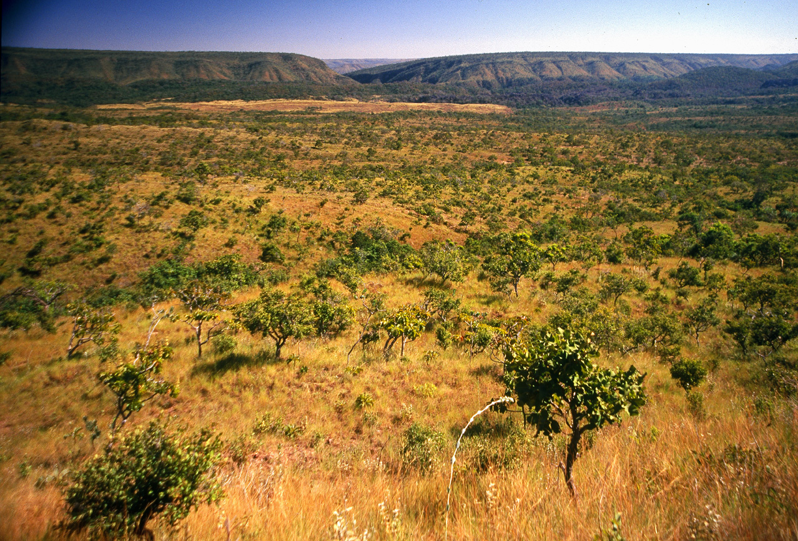

Adivinhe a imagem

Cerrado
Dicas
| Pluviosidade média | 1500mm |
| Temperatura média | 22ºC |
| Solo | Pobre em nutrientes, porém apresenta teor alto de ferro e alumínio |
| Flora | Gramíneas, herbáceas e árvores esparsas |
| Flora característica | Buriti, barbatimão, pequi... |
| Fauna | Cupim, tamanduá, lobo-guará, ema... |
| Localização | GO, BA, PI, MA, MS, MT, TO, MG, SP e DF |
| Ameaças | Desmatamento pelo agronegócio e urbanização |
| Curiosidade | Algumas sementes precisam passar por uma queimada para germinarem |